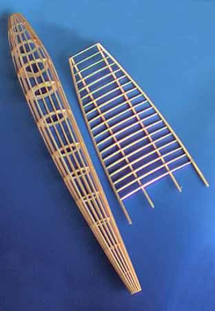

|
Progress? ... well not yet. I spent a few days looking at the drawings, and thinking about how I might start.
Finally, I "averaged" the info at hand, and started in on the framework at a wingspan of 19 3/4". Much of the time was spent figuring out how to make the components, and making jigs for them. Construction of the fuselage was of conventional keel and former technique. the spars were laminated on a curved form, later used for final assembly of the wings. The leading and trailing edges were laminated in place, once the ribs were on the spars.
Shown are the beginnings of the model.
Wing area - 64 sq in After 12 hours, the fuse and wings were pretty much complete.
fuse - 5.8 grams
7 hours later had the tail surfaces, landing gear, nose cone, and tail skid adding more weight. stab - 1.0 grams
|  |
Copyright 1998, Thayer Syme. All rights reserved